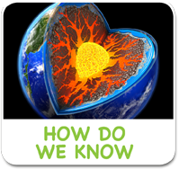
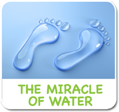

<!-- i-C-a -->
<div data-role="page" id="wonderscience">
  <div data-role="content" style="overflow:hidden !important;">
    <div id="titleb-holder"><h1 style="margin-top:184px;">The Wonders of Science</h1></div>
    
    <div style="width:90%;margin:auto;">
      <!--<div class="aclink"><a href="sub-space-bh.html" data-transition="slide"></a></div>-->
      <div class="aclink"><a href="#" data-transition="slide"></a></div>
      <div class="aclink"><a href="#" data-transition="slide"></a></div>
      <div class="aclink"><a href="#" data-transition="slide" id="invisibleworldlink"></a></div>
      <div class="aclink"><a href="#" data-transition="slide"></a></div><br>
      <div class="aclink"><a href="#" data-transition="slide"></a></div>
      <div class="aclink"><a href="#" data-transition="slide"></a></div>
      <div class="aclink"><a href="#" data-transition="slide"></a></div>
      <div class="aclink"><a href="#" data-transition="slide"></a></div>
    </div>
    
    <div class="botlogoholder"><a href="home.html" class="homelinkbh"></a></div>
    
    <div id="pre-iw" style="width:1024px;height:748px;position:absolute;left:0px;top:0px;visibility:hidden;background:#000000;">
      <div class="previdcontainer">
        <video id="iwvideo" width="1024" height="722" preload>
          <source src="https://dmkessiapqw4p.cloudfront.net/video/invisibleworldintro.m4v" type="video/mp4">
        </video>
      </div>
    </div>
  
  </div> <!-- end content -->  
    <script>
      var iwVideoStatus, iwVideoEvent;
      $(function() {
        var wondersciencePage = $("#wonderscience");
        wondersciencePage.swipe( { swipeRight:goBack, allowPageScroll:"auto"} );
        
        wondersciencePage.on('pageshow', function(){
          iwvideo.addEventListener('playing', function() {
            iwVideoStatus = true;
          });
          iwvideo.addEventListener('ended', function() {
            invisibleworldbg.play();
            $.mobile.changePage('sub-wonderscience-invisibleworld.html');
          });
          wondersciencePage.find('.homelinkbh').on('tap', function() { 
            mainaudiobg.play(); sciencesoundbg.pause(); sciencesoundbg.currentTime = 0; 
          });
          
          wondersciencePage.find('#invisibleworldlink').on('tap', function() {
            sciencesoundbg.pause(); sciencesoundbg.currentTime = 0;
            
            if(app.firstRun.wos.iw) {
              if(!checkConnection()){
                navigator.notification.alert('Device is not connected to Internet!', function(){}, 'Error', 'ok');
                return false;
              }
              var spacepage = "spaceloading.html";
              sessionStorage.assetsName = 'inviworld';
              sessionStorage.nextPage = 'sub-wonderscience.html';
              $.mobile.changePage(spacepage);
            } else {
              mworldViewMedia(app.kidid, 'iwvideo');
              wondersciencePage.find("#pre-iw").css({"visibility":"visible", "z-index":2});
              iwvideo.play();
            }
          });
          
          wondersciencePage.find("#iwvideo").on('tap', function() {      
            if(iwVideoEvent != undefined){ iwVideoEvent = undefined; return; }
            if(iwVideoStatus == undefined){ return; }
            iwVideoStatus = undefined;
            iwvideo.pause();
            iwvideo.currentTime = 0;
            invisibleworldbg.play();
            $.mobile.changePage("sub-wonderscience-invisibleworld.html");
          });
          wondersciencePage.find('.aclink, .botlogoholder').on('tap', function(){
            playClickSound();
          });
          setTimeout(function(){mworldPageVisit(app.kidid, 'The-Wonders-of-Science');},app.IWTrackTime);
        });
        
        wondersciencePage.live('pagebeforeshow', function(evt, data){
          if(data.prevPage.attr('id') == 'spaceLoading'){
            if(!app.firstRun.wos.iw){
              $("#pre-iw").css({"visibility":"visible", "z-index":2});
              mworldViewMedia(app.kidid, 'iwvideo');
              iwvideo.play();
            }
          }
        });
        
      });
        
      function goBack() {
        if(iwVideoStatus != undefined) {
          iwVideoEvent = true;
          iwvideo.pause();
          iwvideo.currentTime = 0;
          sciencesoundbg.play();
          $('#pre-iw').css({"visibility":"hidden", "z-index":0});
        } else {
          $.mobile.changePage("home.html", {transition: "flip", reverse: true });
          mainaudiobg.play();
          sciencesoundbg.pause(); sciencesoundbg.currentTime = 0; 
        }
      }
      
      
      function proceedToIw() {
        if(iwVideoEvent != undefined) { iwVideoEvent = undefined; return; }
        if(iwVideoStatus == undefined) { return; }
        iwVideoStatus = undefined;
        invisibleworldbg.play();
        $.mobile.changePage('sub-wonderscience-invisibleworld.html');
      }
			</script>
</div>
